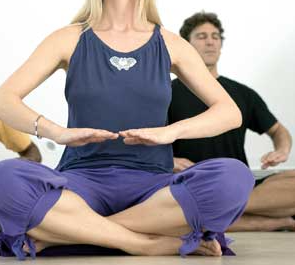

Meditação Nadabrahma
A Meditação Nadabrahma é uma prática tibetana antiga em que sons de zumbido e movimentos das mãos trazem harmonia entre o corpo e a mente. Ela foi criada para conectá-lo com seu eu interior por meio do som e da vibração, resultando em uma profunda sensação de equilíbrio e tranquilidade.
Para praticar esta meditação: Baixe o áudio e ouça-o enquanto segue os passos abaixo.
1. Preparação
Encontre um lugar tranquilo e confortável para meditar. Sente-se em uma postura relaxada com a coluna ereta, com as mãos descansando no colo. Feche os olhos e respire profundamente para relaxar.

2. Passo 1: Zumbido (30 minutos)
Comece a fazer um som de zumbido, como "mmm" ou "aaa", alto o suficiente para criar uma vibração em seu corpo. Deixe o som ressoar dentro de você. Chegará um ponto em que o zumbido continuará por conta própria, e você simplesmente ouvirá as vibrações.

3. Passo 2: Movimentos das Mãos (15 minutos)
3.1 Primeira Metade (7.5 minutos): Dar Energia
Nos primeiros 7.5 minutos, mova as mãos para fora, com as palmas voltadas para cima, em movimentos circulares lentos. Comece o movimento no umbigo, depois estenda as mãos para fora como se estivesse dando energia ao universo. Mantenha seus movimentos suaves e lentos.

3.2 Segunda Metade (7.5 minutos): Receber Energia
Nos próximos 7.5 minutos, inverta o movimento girando as palmas para baixo e trazendo lentamente as mãos de volta ao corpo. Visualize-se recebendo energia do universo, concentrando-se na sensação da energia fluindo para o seu corpo.
4. Passo 3: Relaxamento (15 minutos)
Na etapa final, pare todos os movimentos e sente-se em silêncio. Observe a energia e as vibrações dentro de você enquanto desfruta de um profundo estado de relaxamento e harmonia interior.